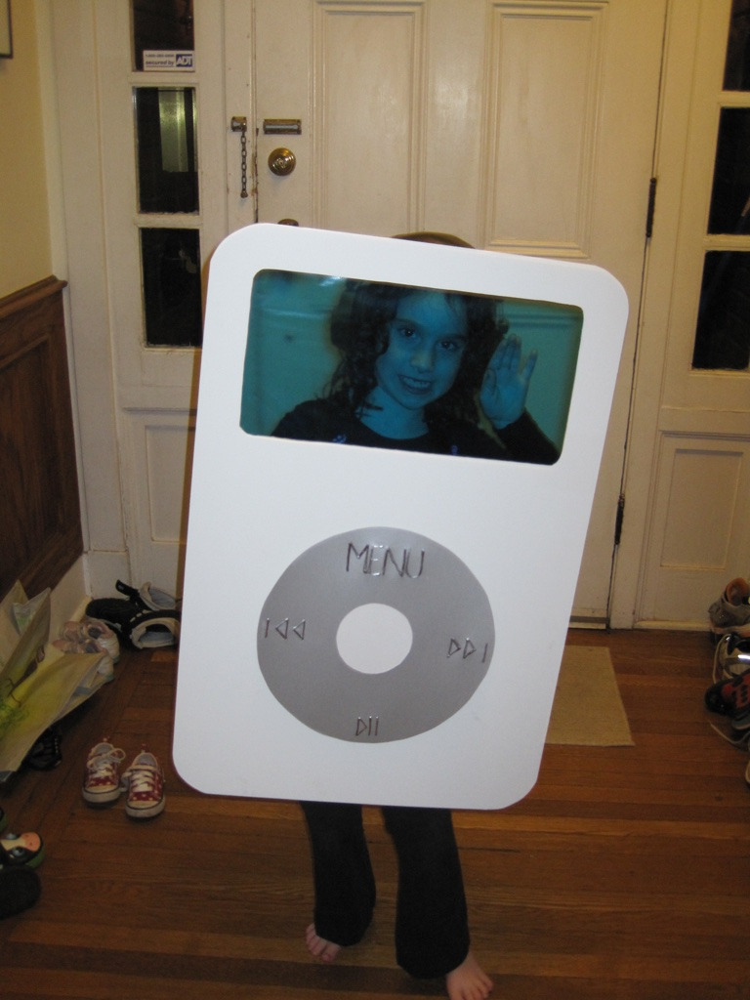

2009
My love of tech was fostered from a young age, and I grew to love the growing world of the internet, pictured in one of my best Halloween costumes - the "dinosaur" of apple, my first-gen iPod.
My love of tech was fostered from a young age, and I grew to love the growing world of the internet, pictured in one of my best Halloween costumes - the "dinosaur" of apple, my first-gen iPod.
I was raised a Wolverine! Both of my parents went to Michigan, including pretty much all of the rest of my family, so my blood runs strictly maize and blue.
I am a big outdoors person, and this comes from my visits to Jackson Hole, Wyoming each summer where my mom would play in the Grand Teton Music Festival. For 3 weeks each year, I got my fill of the nature we didn't have access to living in a city.
One of the most important parts of growing up Jewish was my Bat Mitzvah, the event where a 13-year-old becomes an adult "in the eyes of the synagogue". Part of the preparation for this is a service project for Tikkun Olam, and I baked dog treats to raise money for the local animal shelter.
I graduated class of 2021 as one of the valedictorians of my class. At this point, I had committed to Michigan but was planning on majoring in Political Science. I wanted to do something social justice-based, but wasn't sure exactly what, so it seemed like a good bucket to fall into.
This truly was the moment that changed my path in life. I participated in an early move in program called CS KickStart and was introduced back into the world of technology and coding. I had always loved it as a kid, but grew away from this path because I didn't think that was for me as a woman. After this I knew that CS was definitely my place :)
Freshman year! My love for Michigan became so strong and I know that my entire college experience and aspirations would not have been this great if I had gone anywhere else.
My summer abroad really changed my outlook on life. I had the amazing opportunity to travel in Greece and Israel for 3 months and work an internship at a start-up for 2 of those months! I got to learn about deeper Jewish culture and explore amazing nature that you can't find at home.
Me now!! Having a blast during sophomore year while grinding through my CS classes ϞϞ(๑⚈ ․̫ ⚈๑)∩